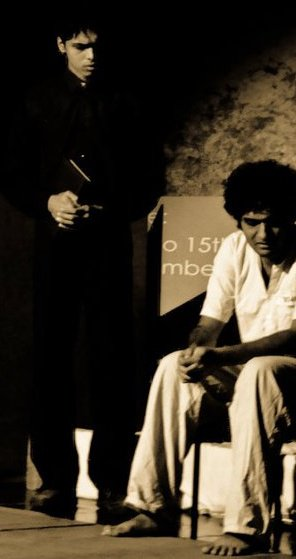
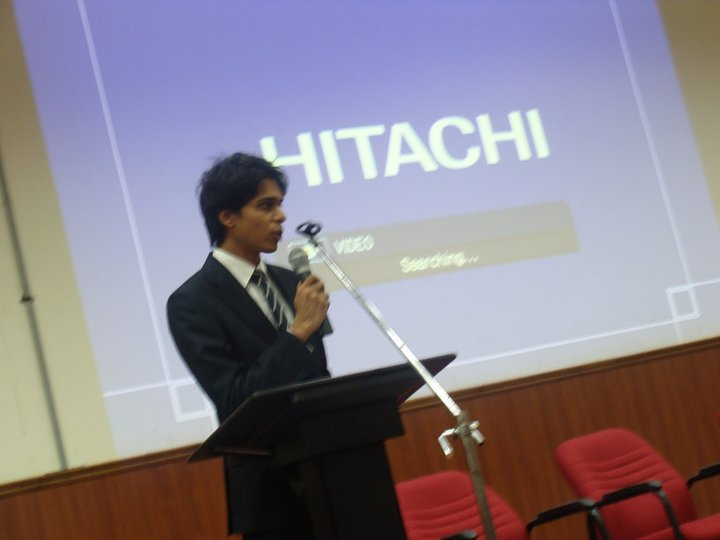
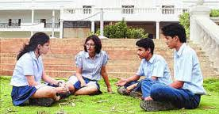
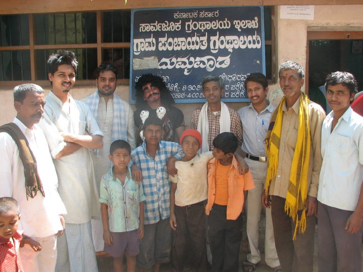

Extra-Curricular |
||||||
|
HomE |
ResearcH |
EducatioN |
Extra-CurriculaR |
ContacT |
BloG |
ResumE |
|  |
English Theatre: - Represented M S Ramaiah Institute of Technology at the national and inter-national levels for English Theatre. - Second Prize at the inter-national level "NLS Theatre Festival" in Bangalore, India (December 2010). To the left is a snapshot of our play titled "The Disposal". - Runners Up Prize for MS Ramaiah Institute of Technology at "Abhinaya":the National English Theatre Competition organized by Jain University (Feb 2010). Debates and Public Speaking: - Won several prizes in many of the major local debate competitions representing Presidency Pre-University College, including "Sparsh 2008", "Unmesha 2006", "Udbhav 2009", and others. - Master of Ceremonies in "Sinusoid", the department's annual cultural fest, in under-grad. |
|  |
Sports: - Part of the winning team at the national-level "All India Cricket Tournament" organized by the Brijesh Patel Cricket Academy in 2006. - Been involved in over 8 years of cricket, at different levels, involving tens of instances of my name being mentioned in the "Times of India" and "Deccan Herald". - Represented "Ranji CC", a Bangalore-based cricket club, from 2007-2011 in the official league cricket tournament organized by the Board of Cricket Control in India (BCCI). - Represented Presidency Pre-University College in their inter-college cricket team. - Represented VidyaShilp Academy in cricket from 2002-2005, during which our team, in one instance, ranked in the top 20 schools in the Prestigious "BT Ramaiah Tournament". |
|
Other Extra-curricular Achievements: - Interviewed by "The Hindu", a nationwide newspaper, as a representative of my high school, Vidyashilp Academy, on the changing trends of studies and how extra-curricular activities can benefit a child's overall academic growth. Shown below on the left is the picture in that article. Find the link to that article over here! - Proud recipient of the "Best All-round Outgoing Student" Award and also awarded for bringing in the most number of Laurels for the college, by Presidency Pre-university College. - Proud recipient of the "Exemplary Conduct Award" in my batch at Vidyashilp Academy. - Aggregate percentage of 88% in ICSE board examinations and cumulative GPA of 8.88/10.00 in MS Ramaiah Institute of Technology. |
|
|  |  |
|
Service to Society: - Volunteer for "Pulse Polio Programme" organized by Rotary Club in India. Immensely proud of the fact that India became officially Polio-Free earlier this year! - Part of a team that performed street-plays in multiple villages in India (like Dharwad and Raichur) in order to create an awareness against certain social evils that were inherently present in these areas. A picture during this tour is put up above (on the right). |
|